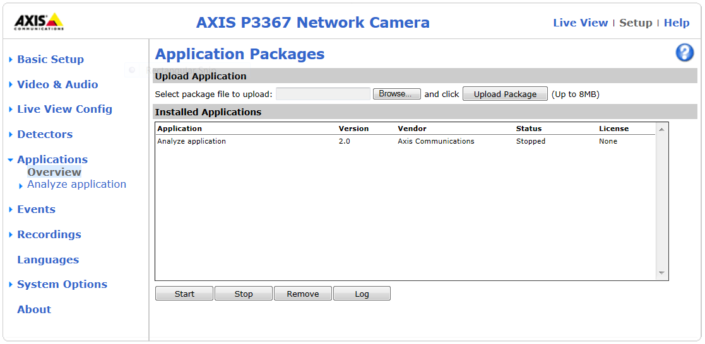
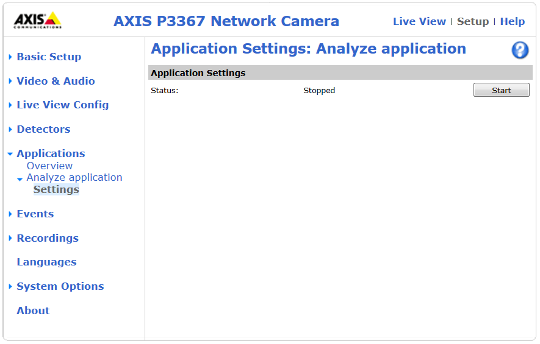
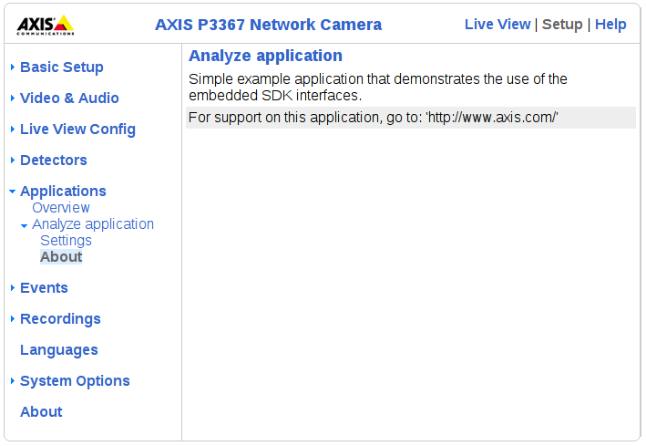

Introduction
AXIS Embedded Development SDK is a set of tools that simplifies development of third party applications for Axis network video products. Once developed, each application is deployed as an Embedded Axis Package (EAP).
The Related Pages tab contains instructions for getting started with AXIS Embedded Development SDK. The Files tab describes the different application programming interfaces (APIs).
Appendix 1: Analytics libraries provides information about the Analytics Libraries RAPP (RAster Processing Primitives) and Fixmath (Fixed point operations).
Interface overview
AXIS Embedded Development SDK provides the following interfaces:
Media capture interface
- Allows the application to retrieve images from the camera. Images can be retrieved in uncompressed raw format(s) or in JPEG format. The frame rate at which images should be captured can be specified, as well as image parameters such as resolution and rotation.
- The capture interface is defined in capture.h
Parameter interface
- Allows the application to store application settings that need to be preserved during reboots and firmware upgrades. Parameters specific to the application can be preconfigured when the application package is created or can can be added in runtime. Callback functions can be defined to specify actions to be carried out whenever a parameter has been updated, for example when the user changes a parameter through the Axis product's web pages.
- The parameter interface has been updated in SDK version 2.0. The legacy interface defined in param.h has been deprecated. It is recommended to use the
axparameter interface defined in axparameter.h instead.
HTTP interface
- Allows the application to act as a cgi or dynamic web page. This is done through an URL redirection, which instead of displaying the specified web page redirects directly to the application. The user will be able to view the information in a web browser. This is a useful way of displaying constantly updated data to the user.
- The http interface has been updated in SDK version 2.0. The legacy interface defined in net_http.h has been deprecated. It is recommended to use the
axhttp interface defined in axhttp.h instead.
Event interface
- Allows the application to interact with the event system in the Axis product. The application can declare events, send events, subscribe to events and receive events. An event can for example describe the status of an I/O port (active or inactive), that motion is detected or status of the SD card.
- The event interface has been updated in SDK version 2.0. The legacy interface defined in event.h has been deprecated. It is recommended to use the
axevent interface defined in axevent.h instead.
- If using the event interface's metadata stream capability, AXIS Metadata Monitor can be helpful.
- AXIS Metadata Monitor is a tool to capture and visualize this metadata stream produced by an Axis device and it can be very useful for validation and troubleshooting during development.
- More information about the AXIS Metadata Monitor tool can be found at the AXIS Partner Pages.
Storage interface
- Allows the application to save and retrieve data on mounted storage devices such as SD cards and NAS (Network Attached Storage) units. An application can only modify its own files on the storage device.
- The storage interface is a new interface introduced in SDK version 2.0. The storage interface is defined in axstorage.h
PTZ (Pan-Tilt-Zoom) interface
- Allows the application to control the camera's pan, tilt and zoom movements, to interact with the PTZ control queue and to create and delete preset positions.
- The PTZ interface is a new interface introduced in SDK version 2.0. The PTZ interface is defined in axptz.h
Serial port interface
- Allows the application to configure and control the Axis product's physical serial ports.
- The serial port interface is a new interface introduced in SDK version 2.0. The serial port interface is defined in axserialport.h
Audio interface
- Allows the application to capture and sample audio from the microphone input on products with audio support.
- The audio interface is a new interface introduced in SDK version 2.0. The audio interface is defined in axaudio.h
License key interface
- Ensures that the application can only run if it has a valid license key. To use license keys, an application ID and license code must be retrieved from Axis. The license codes are intended to be sold to end customers. To run a licensed application, the end user registers the license code together with the unique serial number of the Axis product. When the registration is complete, the user receives a license key which is valid only for the specified application and Axis product. The application will not run until the license key is uploaded to the product.
Web pages overview
An end user can access specific web pages for management and configuration of installed applications. For more information about the web page functionality, see section Creating an Application Package.
Applications are installed, removed, started and stopped from the Setup > Applications > Packages page

Applications are configured from the Setup > Applications > [application name] > Settings page

If the application requires a license, license keys are managed from the Setup > Applications > [application name] > License page .
The Setup > Applications > [application name] > About page has a configurable link that can be directed to the application vendor's web page. It is also possible to include a web page that is completely configurable by the vendor:

Get started >>